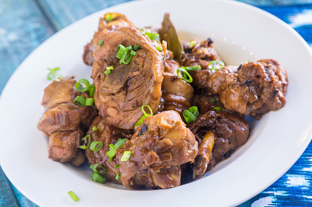

Adobo
Adobo adalah hidangan khas Filipina yang sangat populer, terbuat dari ayam atau babi yang dimasak dengan saus kecap, cuka, dan bawang putih. Rasanya gurih dan asam, sering dianggap sebagai masakan nasional Filipina.
- Bahan utama: ayam atau babi
- Rasa khas: asam, gurih, dan sedikit manis
- Sering disajikan dengan nasi putih hangat
- Masakan yang mudah diolah dan tahan lama